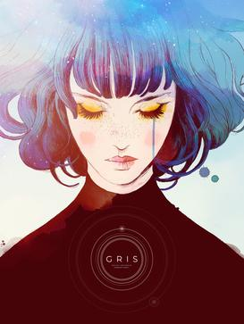

This adventure game focuses on themes of depression and anxiety through the lens of a young adult returning to her hometown. The narrative explores relationships and mental health struggles.
Celeste
A platformer that follows a young woman climbing a mountain, symbolizing her struggle with anxiety and self-doubt.

Gris
A visually stunning platformer that portrays grief and emotional recovery. The gameplay and art style reflect the protagonist's journey through different stages of her emotional turmoil.
Life is Strange
A narrative-driven game that deals with various mental health issues, including depression and trauma, through choices that affect the story's outcome.